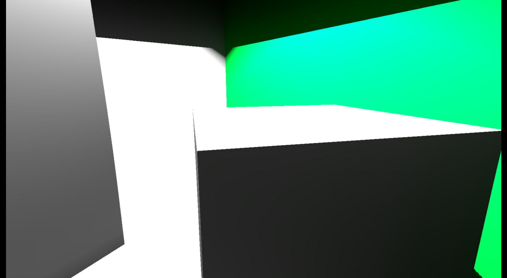

Yume Engine is my playground for graphics experiments and developing my skills in graphics programming.
It took me a lot to finally come up with an idea which allows me to build a high level renderer that is simple but effective. I wanted to have 2 things at first.One being able to create fast prototypes while other is being simple to read/comprehend.
Yume Engine is not a real game engine.I dont have to think about masses using this to create games so
I used hacks here and there to get things going quickly,when it wouldnt be plaisuble in a real engine situation.
In this article I’m going to talk about how Yume engine handles state changes,how it executes draw calls and hopefully
provide source code at the end of the post so you,reader, maybe get a hold of how this engine works.
I wanted to have 2 things at first.One being able to create fast prototypes while other is being simple to read/comprehend.
Yume Engine is not a real game engine.I dont have to think about masses using this to create games so
I used hacks here and there to get things going quickly,when it wouldnt be plaisuble in a real engine situation.
In this article I’m going to talk about how Yume engine handles state changes,how it executes draw calls and hopefully
provide source code at the end of the post so you,reader, maybe get a hold of how this engine works.
For a long time I didnt know how I can create a high level renderer,or to put it better,
I didnt know where to start.After several hundreds of hours inspecting,studying other engines
I now have how I could go for building a renderer that is not so complicated and does what I want.
Along the way I have learnt a lot,be it my coding proficiency or my graphics knowledge.
To people out there who dont know where to start,it is a very good idea to examine open source engines like
Ogre3D,Horde3D,Urho3D and many more! You can find many similarities in Yume by looking at those engines.
Although Yume doesn’t have many features, there are several which I’m really happy to have. Such as Global Illumination!
Deferred Rendering
Yume Engine uses full deferred pipeline.For most of the samples,the GBuffer has 4 render targets, Diffuse Albedo,Specular Albedo,Linear Depth and Normals.
We then use these render targets in the next stages of rendering,such as Deferred Lights.For the moment, I didnt use hardware depth buffer because I also store the linear depth as
float2 linearDepth = float2(z, z*z);
to use in Variance Shadow Mapping.
There is also Reflective Shadow Map support, which is basically rendering to the GBuffer but from the lights perspective.
Deferred Lights
Since Yume is fully deferred,there has to be a way to implement lights.In a deferred pipeline,we must create a pass for each light,be it directional, point or spot light.
For each point light,we draw a tesellated sphere,move it to lights world position and scale it to point lights range. We then enable stencil test using the stencil buffer from the GBuffer pass. Comparing against stencil buffer yields the pixels that will be in the point lights range of influnce. Then we shade the pixels by reconstructing the depth in the pixel shader using the Linear Depth from the GBuffer pass.
Results
Horizon Based Ambient Occlusion
Adapting from the sample in NVidia SDK’s DirectX 9 HBAO implementation, Yume Engine supports HBAO. Ambient Occlusion is not a simple concept to explain but in easiest words,for pixels in depth buffer,we assume a hemisphere,then shoot rays at random directions to see if they occlude something.If they do we add a occlusion factor.Note that this is the very basic idea of Ambient Occlusion and there are several implementations such as Scaleable Ambient Obscurance,ABAO,SSAO,SSDO,AAO.. For more information see GPU GEMS 3 Here is a gif of the effect when HBAO is off,max,med and normal qualities.

Here is a side by side comparison
Light Propagation Volumes
PVs are small volumetric textures which are injected with VPLs generated from an RSM and then scatter the light from each cell in the volume to their neighbors. After several iterations, the volume contains the diffuse indirect light distribution of the scene covered by it. I implemented LPV using Tobias Franke’s source code and the <a paper by Kaplanyan and Dachsbacher.We get a real time indirect contribution and its not that much performance heavy.
Voxel Cone Tracing
Voxel Cone Tracing works by injecting VPLs generated from RSMs into large volumetric structures which are then prefiltered (i.e. mip-mapped). Instead of casting many rays to integrate the cone contribution on a surface point, lower resolution mip-map levels of the volume are queried to gather the pre-integrated first bounce.I implemented LPV using Tobias Franke’s source code and the paper by Nvidia.

Chromium Embedded Framework
The Chromium Embedded Framework (CEF) is a simple framework for embedding Chromium-based browsers in other applications.It is basically having a web browser functionality in a single but large library.Using CEF we can render web content into a off-screen texture then render to a full-screen quad with transparency enabled and premultiplied alpha blending.I initially thought to use CEF in the place of Flash/Scaleform but wonder about its performance.Its pretty good so far although I didn’t do anything but sending frame data to the CEF side and displaying it. I dont know how it would work in a real game but I dont think it will be worse than Scaleform.
I created a child project called Cef3D, which wraps common CEF functionality and provides handy functions for javascript bindings and rendering to multiple buffers.Here is an example of rendering 3 web browsers to their respective buffers,then rendering those buffers as diffure textures.
Cef3D will create a secondary executable so we will get the less performance impact. Only performance hit is uploading the off-screen buffer to the gpu.CEF only sends the dirty rectangles,i.e. the rectangles that needs rendering in the texture each time a part of the web browser is changed, we will only re-render that part.
I designed the web page with React and MDL using NodeJs. Only special thing to do is enable transparent rendering on the CEF side and make sure HTML body is transparent.After that we have to set the blending mode to allow the OM to premultiply our alpha value.
Post Processing
Yume makes use of Ping-ponging to select what render targets will be written to or read from in a post-process chain.So it is possible to bind a lot of post prossing effect sequencially.
Bloom , Tone Mapping and Eye Adaptation
Depth of Field

God rays
FXAA
Off

On